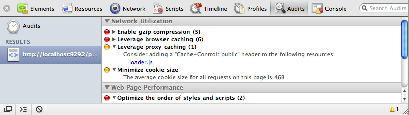

{% include JB/setup %}
{% raw %}
<div>
<div class="book" title="Auditors"><div class="book"><div class="book"><div class="book"><h1 class="title1"><a id="I_sect110_d1e10042" class="calibre1"></a>Auditors</h1></div></div></div><p class="calibre3"><a id="I_indexterm10_d1e10046" class="calibre1"></a><a id="I_indexterm10_d1e10051" class="calibre1"></a>There are some really good tools to give you a quick heads
    up regarding your site’s performance. <a class="ulink" href="http://developer.yahoo.com/yslow">YSlow</a><a id="I_indexterm10_d1e10057" class="calibre1"></a> is an extension of Firebug<a id="I_indexterm10_d1e10061" class="calibre1"></a>, which is in turn a Firefox<a id="I_indexterm10_d1e10065" class="calibre1"></a> extension. You’ll need to install all three to use it. Once
    it’s installed, you can use it to audit web pages. The extension will run
    through a series of checks, including caching, minification, gzipping, and
    CDNs. It will give your site a grade, depending on how it fares, and then
    offer advice on how to improve your score.</p><p class="calibre3">Google Chrome and Safari also have auditors, but these are built
    right into the browser. As shown in Chrome in <a class="ulink" href="ch10s06.html#fig_10_1" title="Figure 10-1. Auditing web page performance with Web Inspector">Figure 10-1</a>,
    simply go to the Audits section of Web Inspector and click Run. This is a
    great way of seeing what things your site could improve on to increase its
    performance.</p><div class="book"><div class="figure"><a id="fig_10_1" class="calibre1"></a><div class="book"><div class="book"><a id="I_mediaobject10_d1e10078" class="calibre1"></a></div></div><p class="title4">Figure 10-1. Auditing web page performance with Web Inspector</p></div></div></div></div>

{% endraw %}

